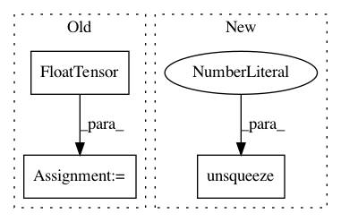

b1935c97fa1175908c579a4db06214174253f5f4,server/synthesizer.py,Synthesizer,tts,#Synthesizer#Any#Any#,173
Before Change
postnet_output, decoder_output, alignments, stop_tokens)
if self.pwgan:
vocoder_input = torch.FloatTensor(postnet_output.T).unsqueeze(0)
if self.use_cuda:
vocoder_input.cuda()
wav = self.pwgan.inference(vocoder_input, hop_size=self.ap.hop_length)
elif self.wavernn:
After Change
decoder_output, postnet_output, alignments, stop_tokens = run_model_torch(self.tts_model, inputs, self.tts_config, False, speaker_id, None)
// convert outputs to numpy
if self.vocoder_model:
vocoder_input = postnet_output[0].transpose(0, 1).unsqueeze(0)
wav = self.vocoder_model.inference(vocoder_input)
if self.use_cuda:
wav = wav.cpu().numpy()
else:
In pattern: SUPERPATTERN
Frequency: 4
Non-data size: 3
Instances
Project Name: mozilla/TTS
Commit Name: b1935c97fa1175908c579a4db06214174253f5f4
Time: 2020-06-26
Author: erogol@hotmail.com
File Name: server/synthesizer.py
Class Name: Synthesizer
Method Name: tts
Project Name: r9y9/wavenet_vocoder
Commit Name: 827978583ed23cdbd98422e39fb3f50e961eb9d9
Time: 2018-01-10
Author: zryuichi@gmail.com
File Name: synthesis.py
Class Name:
Method Name: wavegen
Project Name: facebookresearch/SentEval
Commit Name: 9b1126c25af2105531505d8a3c864f3221c61fac
Time: 2018-05-06
Author: aconneau@fb.com
File Name: examples/models.py
Class Name: BLSTMEncoder
Method Name: forward
Project Name: cornellius-gp/gpytorch
Commit Name: 9b664bd7cd8dbb9657626166ba61887ed06774d7
Time: 2017-09-13
Author: gpleiss@gmail.com
File Name: gpytorch/utils/toeplitz.py
Class Name:
Method Name: index_coef_to_sparse